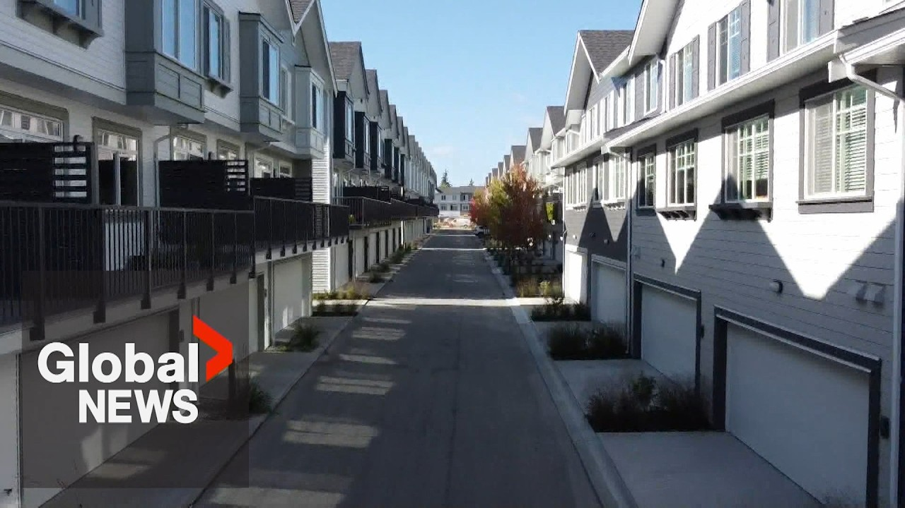

【温哥华都市区住房危机下2000多套公寓空置】
Summary: Metro Vancouver's condo market is struggling with over 2,000 unsold new condos, low pre-sales, and buyer hesitancy due to affordability and economic uncertainty, though experts note favorable conditions for buyers.
摘要： 温哥华都市区的公寓市场陷入困境，2000多套新建公寓滞销，预售低迷，买家因负担能力和经济不确定性而犹豫，但专家指出对买家有利的市场条件。

⏱️ Estimated Reading Time: 3 min
Metro Vancouver's condo market is in dire shape.
温哥华都市区的公寓市场形势严峻。
I would say it's probably dead at this point in terms of um the activity.
可以说目前市场活动几乎停滞。
A report last month finding more than 2,000 new completed condos are sitting unsold, predicted to rise to nearly 3 a half thousand by year's end.
上月报告发现2000多套新建完工公寓滞销，预计年底将增至近3500套。
That's in addition to regular listings.
这还不包括常规挂牌房源。
Condo uh listings are probably the highest we've seen them in years.
公寓挂牌量可能是多年来最高的。
16,000 listings overall in the Greater Vancouver Real Estate Board.
大温哥华房地产委员会共有16000套挂牌房源。
It's the first time in 10 years and pre-sales are so low it's forcing some to rethink current projects.
这是十年来首次，预售量极低，迫使一些开发商重新考虑当前项目。
We heard of one last week in Burnaby where um the developer decided not to proceed with the project and he and in as a result returned all the deposits.
上周本拿比就有一例，开发商决定放弃项目并退还所有定金。
But even though it is a buyer market, buyers are still hesitant.
尽管现在是买方市场，买家仍犹豫不决。
I think it's just a reflection of a couple of factors.
我认为这反映了几方面因素。
just low affordability and a lot of the uncertainty in the market around um the economy and those uh trade shocks right now.
负担能力低下，以及当前经济和贸易冲击带来的市场不确定性。
Sunday morning, the prime minister was asked if lowering prices was a way to improve affordability.
周日早上，总理被问及降低房价是否是提高负担能力的途径。
Mark Carney saying his election promised to double housing starts would eventually drive prices down.
马克·卡尼表示，他竞选时承诺将住房开工量翻倍，最终会压低房价。
Once we increase uh as a country the rate of home building um then that is going to make home prices much lower than they otherwise would be.
一旦全国提高住房建设速度，房价将比原本水平大幅下降。
But that's a medium-term effect.
但这是中期效果。
It comes after the country's new housing minister and former Vancouver mayor Gregor Robertson confirmed lowering prices would not be part of his policies.
此前新任住房部长兼前温哥华市长罗品信确认，降低房价不在其政策范围内。
We don't need to upset the apple cart with people's uh homes and assets and uh mortgages.
我们不需要打乱人们的住房、资产和抵押贷款现状。
I think we got to be careful to protect everyone who's who's got a home right now, make sure that that's stable, but also we got to build a lot more.
我认为必须谨慎保护现有房主，确保稳定，同时还需大幅增加建设量。
According to experts, there is a silver lining.
专家指出，仍有积极面。
We haven't seen market conditions this attractive in years.
多年来我们未见过如此有利的市场条件。
I would likely say pre- pandemic.
可以说疫情前都未曾出现。
Buyers who are able to get into the market have strong negotiating power.
有能力入市的买家拥有强大议价权。
Alyssa Tibo, Global News.
艾丽莎·蒂波，环球新闻。